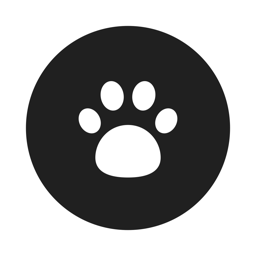

Local AgentsLocal Agents（以下「本アプリ」）が扱う情報と、その扱い方を説明します。アプリの中の「設定 → プライバシーとクラウドAIへの送信 → プライバシーポリシー」でも同じ内容を読めます。
会社・社員・会話・成果物・画像・設定は、すべてあなたの端末の中（本アプリ専用の領域）に保存します。本アプリの開発者はサーバーを持たず、あなたのデータを受け取りません。アカウント登録もありません。iPhone・iPadのAIを使うときは、AIの処理も端末の中だけで行います。
あなたが ChatGPT（OpenAI）・Claude（Anthropic）・Gemini（Google）・Grok（xAI）の APIキーを登録し、アプリに表示される説明を読んで送信に同意したときだけ、次の内容をその会社の API へ直接送ります。本アプリの開発者のサーバーは通りません。
「おまかせ」の仕事、iPhoneのAI・PCのAIを使う社員の分、体験モードの内容は、AIの会社へ送りません。送った内容は、その会社のプライバシーポリシーと利用規約に従って扱われます。
| 送り先 | プライバシーポリシー |
|---|---|
| OpenAI（ChatGPT） | openai.com/policies/privacy-policy |
| Anthropic（Claude） | anthropic.com/legal/privacy |
| Google（Gemini） | policies.google.com/privacy Gemini API 追加利用規約：ai.google.dev/gemini-api/terms（無料枠では、送った内容がサービスの改善に使われ、人が確認することがあります） |
| xAI（Grok） | x.ai/legal/privacy-policy |
APIキーとPC連携のキーは、端末のキーチェーンにだけ保存します。その会社への接続にだけ使い、会社のデータ・ほかの端末・開発者には渡しません。
データは端末に残り、あなたが消すまで保存されます。会話・会社・社員・ダウンロードしたAIはアプリの中で削除でき、APIキーは「設定 → クラウドAI（APIキー）」で削除できます。本アプリを削除すると、端末内のデータはすべて消えます。AIの会社へ送った内容の保存期間と削除方法は、各社のポリシーをご確認ください。
クラウドAIへの送信の同意は、「設定 → プライバシーとクラウドAIへの送信」でいつでも取り消せます。取り消した後は、そのAIへは何も送りません。
本アプリは、子どもから意図的に個人情報を集めることはありません。
開発者はあなたのデータを受け取らないため、第三者に提供・販売することはありません。クラウドAIへの送信は、上の3のとおり、あなたの同意にもとづいてあなたのAPIキーで直接行われます。
内容を変えるときは、このページとアプリの更新でお知らせします。
制定日：2026年10月16日